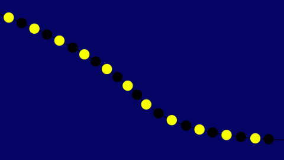
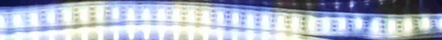
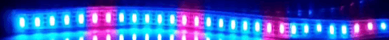

Dashed Lights, generates a dashed format light in a range of LED strip.

There are a bunch of parameters for creating your desired Dashed effect. In this section, we will describe each parameter:
Determine length of the LED, You can set this value less and more than your real LED Length.
Determine the length of the sections of dashed line.
In this example we set 5 and 2 for sections respectively:

These two parameters determine the colors for both sections.
In this example we used yellow and blue colors for sections:

Determine the start and endpoints of the dashed line.
In gif below we limited effect start and effect end between 5 and 25:

Determine the speed of shifting colors between sections.
Note: Set the value of this parameter to 0 to have a constant dash.
Here you can see some speed parameters examples:
Speed=0: 
Speed=100:

Speed=300: